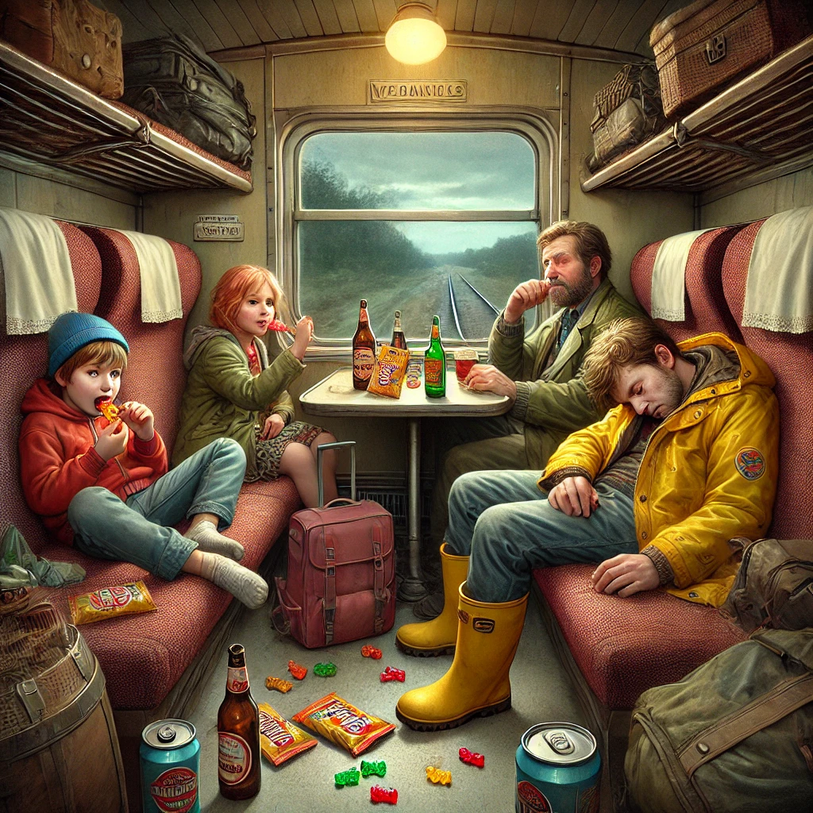

17. Dezember
Die Finte
Johann, Maggy und Hans standen auf dem Bahnsteig und warteten auf ihren Zug nach Bari. Die Spannung war spürbar. Johann blickte zu Giorgio, der eine Zigarette rauchte und scheinbar unbesorgt war.
„Wir müssen ihn irgendwie ausschalten“, flüsterte Johann. „Wenn wir ihn nicht abhängen, wird er uns nach Brindisi folgen.“
„Aber wie?“ fragte Maggy.
Johann überlegte kurz. „Schlaftabletten. Wir mischen sie in sein Bier. Dann schläft er ein, und wir können in Bari den Zug wechseln.“ Es war eine spontane Eingebung, aber es fühlte sich richtig an.
Maggy nickte entschlossen. „Ich kenne den Weg zur Bahnhofsapotheke. Los, Johann.“
Hans nickte. „Geht schnell. Ich werde Giorgio beschäftigen. Und falls er fragt, erkläre ich, dass ihr Süßigkeiten kaufen wollt – und Desinfektionsmittel, weil Züge ja immer so dreckig sind.“ Er zwinkerte Ihnen zu.
Während Johann und Maggy Richtung Apotheke eilten, ging Hans zu Giorgio. „Sag mal, Giorgio, sollen wir nicht noch einen Kasten Bier für die Fahrt kaufen? Und Wasser für die Kinder?“
Giorgio grinste breit. „Das ist eine gute Idee. Bier macht jede Zugfahrt besser!“
Kurze Zeit später kamen Johann und Maggy zurück, als ob nichts gewesen wäre. Johann hielt eine Tüte voller Süßigkeiten, und Maggy hatte eine kleine Flasche Desinfektionsmittel in der Hand. Hans hatte inzwischen die Getränke organisiert, und gemeinsam stiegen sie in den Zug.
Als der Zug losfuhr, begann Hans, die Bierflaschen zu öffnen. Er schenkte Giorgio ein Glas ein und eines für sich selbst. „Auf eine gute Fahrt!“ rief er und stieß mit Giorgio an.
Giorgio nahm einen großen Schluck. „Ah, das tut gut!“
Hans ließ die Unterhaltung locker und lustig werden, und die Stimmung lockerte sich. Giorgio lehnte sich entspannt zurück und genoss die Fahrt. Nach drei Bier stand er auf. „Ich geh mal aufs Klo.“
Das war der Moment, auf den alle gewartet hatten. Hans zog die kleinen Tabletten aus seiner Tasche und zermalmte sie hastig. Johann reichte ihm Giorgios Bierflasche, und Hans schüttete das Pulver hinein. Er schwenkte die Flasche, bis sich alles aufgelöst hatte, und stellte sie dann wieder an Giorgios Platz. “Damit sollte er für mindestens 5 Stunden ausgeschaltet sein”, flüsterte Hans verschwörerisch.
Als Giorgio zurückkam, grinste er. „So viel Bier trinken und dann aufs Klo gehen – das ist das Leben.“ Er nahm einen weiteren Schluck und ließ sich in seinen Sitz fallen. Nach wenigen Minuten wurden seine Bewegungen langsamer, seine Augen fielen zu, und schließlich schlief er tief und fest ein.
„Es hat funktioniert“, flüsterte Maggy erleichtert.
In Bari verließen die drei unauffällig den Zug, während Giorgio schnarchend in seinem Sitz lag. Sie schafften es gerade rechtzeitig, den Anschlusszug nach Brindisi zu erreichen, und ließen Giorgio weit hinter sich.
>
Giorgio wachte auf, als eine Hand seine Schulter rüttelte. Es war der Schaffner, der ihn streng ansah. „Signore, il suo biglietto, per favore.“
Giorgio blinzelte verschlafen und reichte ihm das Ticket.
Der Schaffner musterte es und runzelte die Stirn. „Questo biglietto è per il viaggio a Bari. Ma questo treno va a Roma“
Giorgio erstarrte. „Was?“ Er blickte sich um und sah, dass der Zug in die falsche Richtung fuhr. Die Erkenntnis traf ihn wie ein Schlag.
„Verdammt!“, zischte er. „Diese Bastarde haben mich reingelegt.“
Kaum war der Schaffner weitergegangen, zog Giorgio sein Handy heraus und rief einen seiner Komplizen an.
„Sie haben mich ausgetrickst und in Bari abgehängt“, knurrte er.
“Bleib ruhig, Giorgio.”, sagte die Stimme am anderen Ende. “Wir haben ihre Spur. Die letzte Handyortung führt nach Neapel. Wir kümmern uns darum”.
Giorgio hielt kurz inne und dachte nach. „Natürlich“, sagte er dann. „Sie haben den Zug verlassen, als ich eingeschlafen bin, sind zurück nach Rom gefahren und dann weiter nach Neapel. Bari war nur eine Finte, um mich in die falsche Richtung zu locken. Aber sie haben nicht mit meiner Intelligenz gerechnet.“
Ein widerwärtiges Lachen hallte durch den Hörer. „Wir treffen uns in Neapel“, sagte die Stimme.
>
Währenddessen hatten Johann, Maggy und Hans Brindisi erreicht. Dort fanden sie, wie Carlos es beschrieben hatte, ein kleines Touristenboot mit der Aufschrift „Adria Explorer“ und einem grossen Schild : “Rundfahrt nach Dubrovnik, 530 Euro”. Der Kapitän, ein bulliger Mann mit wettergegerbtem Gesicht, führte sie an Bord.
„Nur ihr drei?“ fragte er kurz.
Johann nickte, während sie ihr Gepäck verstauten und sich an Deck niederließen.
„Gut“, sagte der Kapitän. „ Ihr habt Glück. Es wird ruhig auf dem Wasser heute. Nächstes Ziel: Griechenland.“
Das Boot legte ab, und die Silhouette Italiens wurde langsam kleiner am Horizont.
Johann war verwirrt. Es stand doch, dass das Boot nach Dubrovnik fahren würde.
„Dubrovnik ist doch in Kroatien“, sagte Johann.
Hans schmunzelte. „Das ist nur Tarnung, falls uns jemand aufs Boot gehen sieht. Carlos schickt uns nach Griechenland. Die Verfolger glauben, wir gehen in die andere Richtung.“
Während das Boot über die Adria fuhr, bereitete sich Giorgio in Rom darauf vor, mit seinen Kumpanen nach Neapel aufzubrechen. Seine Wut war groß, aber er war sicher, dass er Johann und die anderen bald in die Enge treiben würde.
Was soll Johann tun?
- Giorgio war ein Verraeter. Versuche herauszufinden, in welche Beziehung Hans zu Carlos steht. Kann man Hans vertrauen?
- Warum geht die Fahrt nach Griechenland? Versuche herauszufinden, ob Hans versteht, was Carlos plant.
- Die Ueberfahrt dauert lange, Zeit die Faehigkeiten zu ueben. Vielleicht kann Maggy dabei helfen?